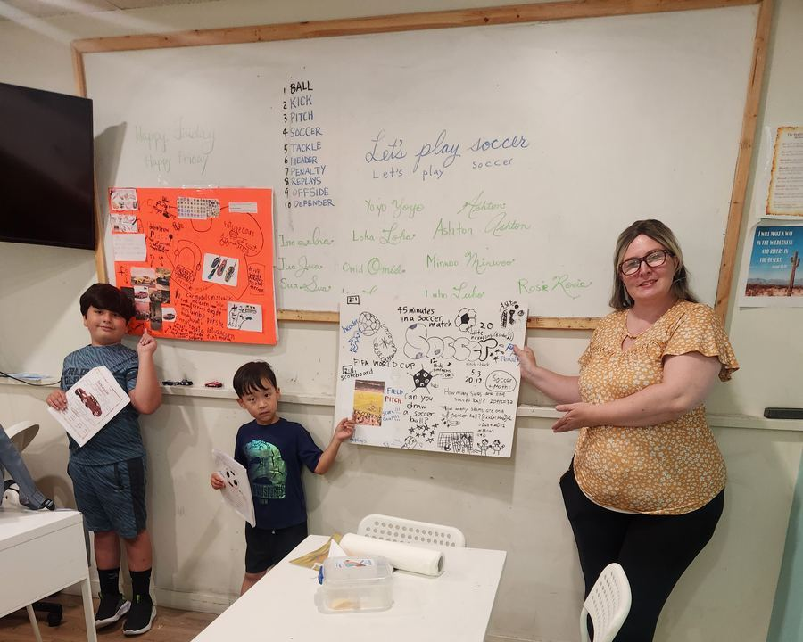
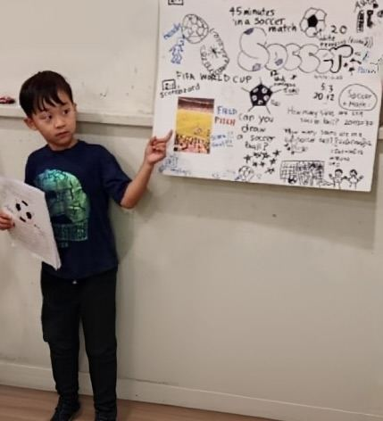
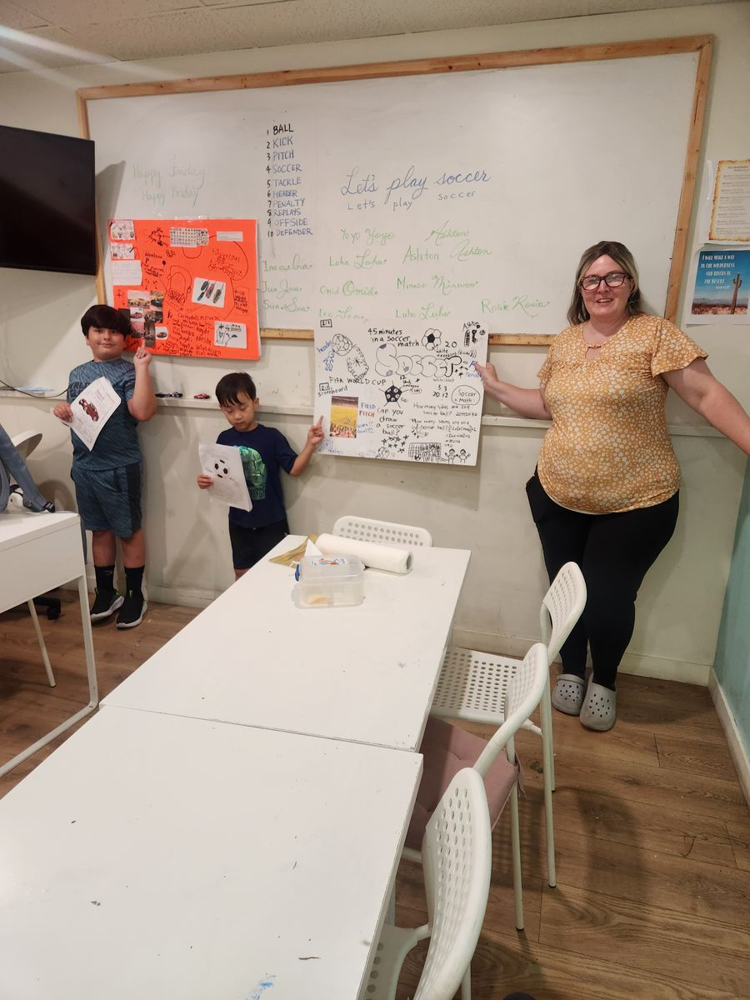
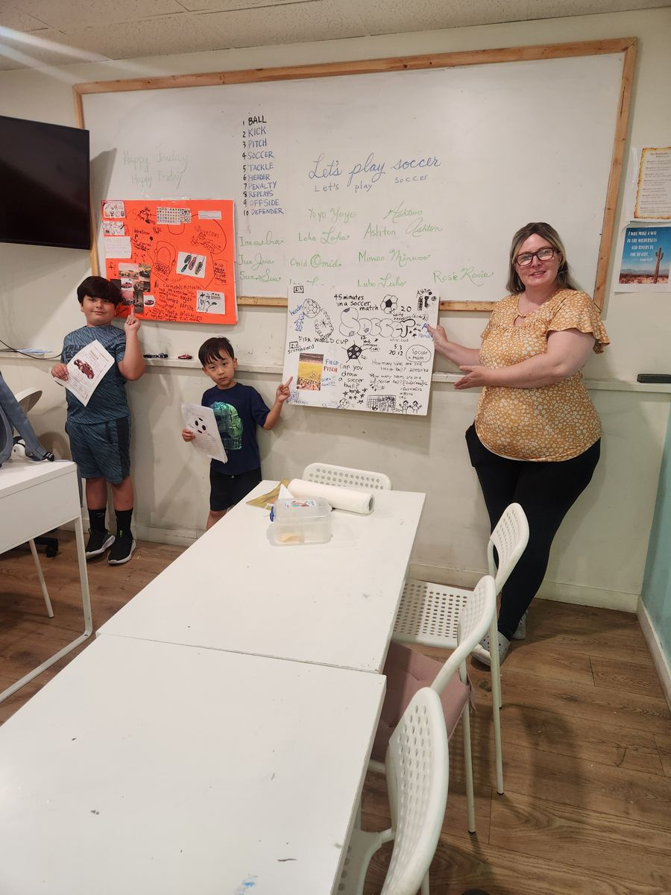
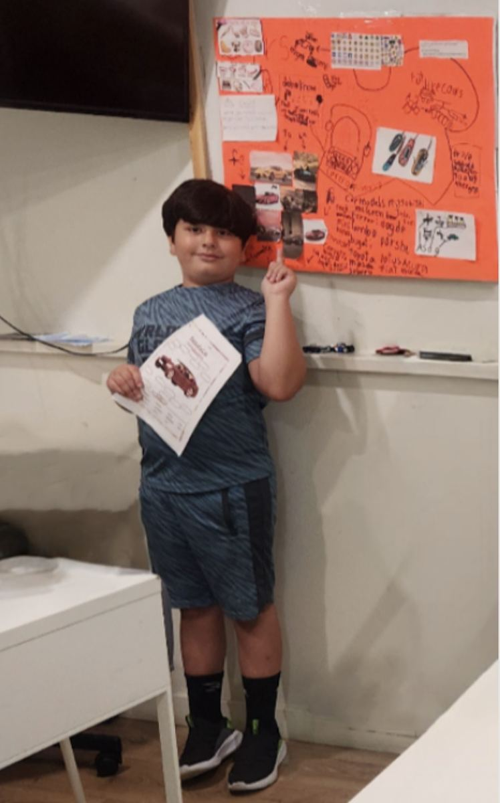
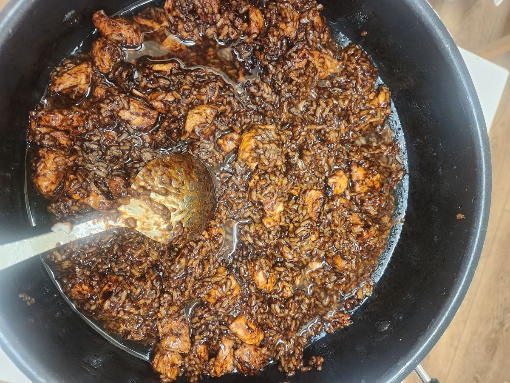
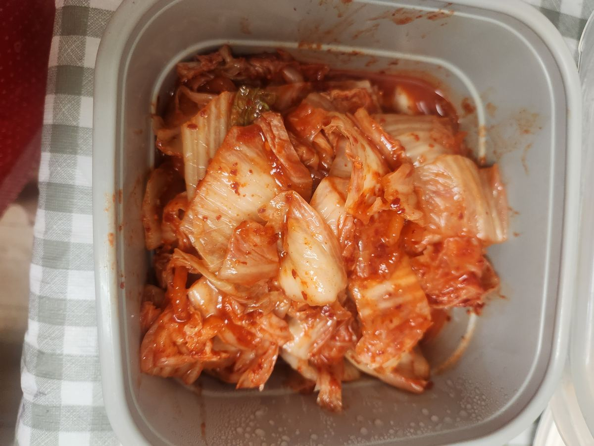

축구 포스터 한 장이
영어 수업이 됐어요 ⚽
Presentation day two. And this is where the whole project idea paid off properly — because the presenter did not just show his poster. He taught the class.

⚽ Ten Words, Straight off the Poster Soccer vocabulary
Look at the board behind them. Every word on that list came out of one student's soccer poster — each one labelled on the board with a drawing beside it, so the meaning arrives with the word.
Some of these are genuinely hard words for a young learner — offside, tackle, penalty — and every one of them arrived attached to something the children already understood. Nobody had to be told why it mattered.


The board also carried the rest of his research: 45 minutes in a soccer match, the FIFA World Cup, a drawn scoreboard reading 2:1, and — still there from earlier in the week — the 20 hexagons, 12 pentagons and 90 seams.
✍️ And Then, in Cursive Let's play soccer
Then the lesson turned into handwriting. The sentence went up on the board twice — once in print, once in cursive — and everybody wrote it out.
And then the best part: every child wrote their own name in cursive, twice. Ina, Jua, Sua, Loha, Omid, Minwoo, Ashton, Luho, Rosie, Yoyo — the whole board filled up with signatures in green.
Three lessons, one poster
Vocabulary, handwriting, and public speaking — all launched from one child's interest in soccer. That is the argument for letting them choose the topic themselves.

🚗 Cars, and How to Drive Them The second presentation
Next up, the orange board. Car makes and models — Mitsubishi, McLaren, Ford, Toyota, Porsche, Bugatti — photographs, and an explanation of exactly why he likes them.
He came with a handout too: a labelled diagram of a car's parts, so his audience picked up vocabulary from his topic just as they had from the soccer one.

🍚 Lunch Braised chicken & kimchi


Next week is our last week of summer camp. The remaining presentations are still to come — birds, toys, and one very confident debate among them.
Ask them tonight what offside means. Then ask them to write their name in cursive. Both answers came from the same afternoon. ⚽